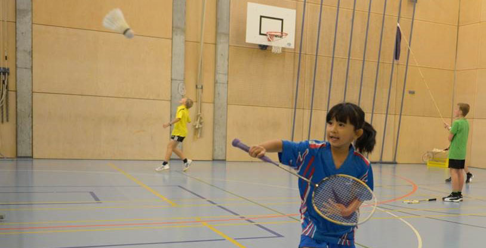

Consigli per principianti
Ecco alcuni consigli utili per principianti che si stanno avvicinando al badminton:
1. Impara le Regole di Base
Familiarizzati con le regole fondamentali del gioco, come il punteggio, le dimensioni del campo e le modalità di servizio.
2. Scegli l’Attrezzatra Giusta
Investi in una buona racchetta e nel volano. Per i principianti, una racchetta leggera con un buon bilanciamento può facilitare il gioco.
3. Pratica i Fondamentali
Concentrati su colpi di base come il serve, il clear, il drop shot e il smash. La pratica regolare migliorerà la tua tecnica.
4. Gioca con Diversi Avversari
Giocare con persone di diversi livelli ti aiuterà a migliorare e ad adattarti a diverse strategie di gioco.
5. Divertiti!
Non dimenticare di divertirti. Il badminton è un gioco entusiasmante e sociale, quindi goditi ogni momento!
